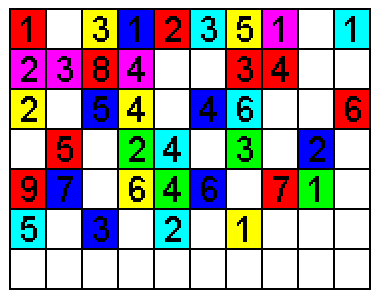

| Desfragmentación |
|---|
| La desfragmentación es como optimizar el espacio en tu disco duro. Con el uso diario del ordenador, los archivos y datos pueden dispersarse en diferentes fragmentos por todo el disco. La desfragmentación reorganiza esos fragmentos, colocando los datos relacionados más cerca uno del otro. Esto ayuda a que el disco duro acceda a la información de manera más rápida y eficiente, ya que no tiene que buscar en múltiples ubicaciones dispersas |
|  |